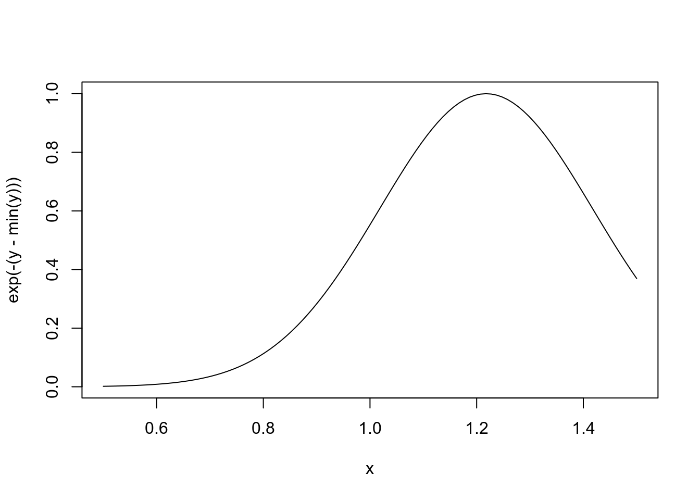
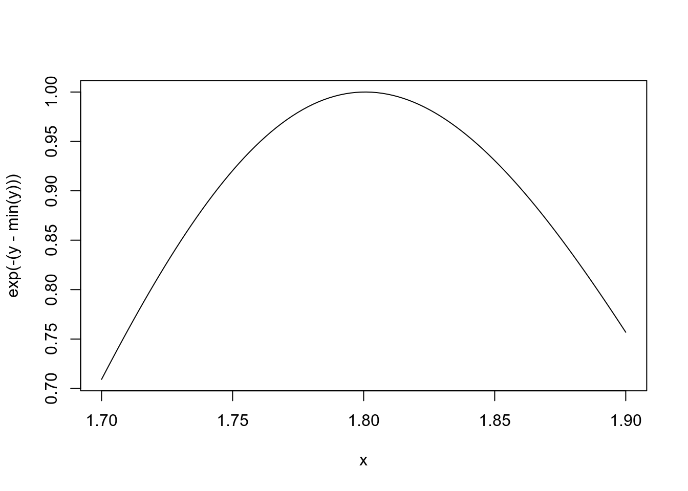

lapply() function as a better approach.Control structures allows us to:
Commonly used control structures:
Comparison with the apply functions:
We use logical operators to examine the relationship between multiple logical expressions.
TRUE & c(TRUE, FALSE, FALSE) # equivalent to c(TRUE, TRUE, TRUE) & c(TRUE, FALSE, FALSE)
[1] TRUE FALSE FALSE
TRUE && c(TRUE, FALSE, FALSE)
[1] TRUETRUE | c(TRUE, FALSE, FALSE) # equivalent to c(TRUE, TRUE, TRUE) | c(TRUE, FALSE, FALSE)
[1] TRUE TRUE TRUE
TRUE || c(TRUE, FALSE, FALSE)
[1] TRUEAll AND operators are evaluated before OR operators.
5 > 8 || 6 != 8 && 4 > 3.9
[1] TRUEThere’s also the xor() function.
xor(5 == 6, !FALSE)
[1] TRUEisTRUE(6 > 4)
[1] TRUE
isTRUE(NA)
[1] FALSE
isTRUE(3)
[1] FALSEidentical('twins', 'twins')
[1] TRUE
identical('hello', 'Hello')
[1] FALSE
identical(5 > 4, 3 < 3.1)
[1] TRUEThe which() function takes a logical vector as an argument and returns the indices of the vector that are TRUE.
which(c(TRUE, FALSE, TRUE))
[1] 1 3
ints <- sample(10) # random sampling of integers from 1 to 10 without replacement.
ints
[1] 4 2 9 8 1 7 3 6 5 10
which(ints > 7)
[1] 3 4 10So we could use which() to give the indexes we want to selection operators, in order to extract elements from a vector or data frame.
head(airquality)
Ozone Solar.R Wind Temp Month Day
1 41 190 7.4 67 5 1
2 36 118 8.0 72 5 2
3 12 149 12.6 74 5 3
4 18 313 11.5 62 5 4
5 NA NA 14.3 56 5 5
6 28 NA 14.9 66 5 6
airquality[which(airquality$Ozone == 36), "Wind"]
[1] 8.0 10.3But the subset() function does the same thing.
subset(airquality$Wind, airquality$Ozone == 36)
[1] 8.0 10.3Also the functions any() and all() take logical vectors as their argument.
any(ints < 0)
[1] FALSE
all(ints > 0)
[1] TRUEif(<condition>) {
# do something
} else {
# do something else
} Series of tests:
if(<condition>) {
# do something
} else if {
# do something else
} else {
# do something else
} # Generate a uniform random number.
x <- runif(1, 0, 10); x
[1] 5.404275
if (x > 3) {
y <- 10
} else {
y <- 0
}
y
[1] 10In R we can write the following equivalent statements:
y <- if(x > 3) {
10
} else {
0
}
y
[1] 10for(<iterator_variable> in <sequence_or_vector>) {
# do something with each sequence's value or vector's element.
}The curly braces are not necessary for one-line loops. However, not using culry braces will burn you if you decide to expand the loop to multiple lines.
# Accessing elements by index.
v <- c("a", "b", "c", "d")
for(i in 1:4) {
print(v[i])
}
[1] "a"
[1] "b"
[1] "c"
[1] "d"seq_along() function.
# Accessing elements by a sequence of integer indexes generated
# by the seq_along() function based on the length of an object.
for(i in seq_along(v)){
print(v[i])
}
[1] "a"
[1] "b"
[1] "c"
[1] "d"# Accessing by elements.
for(letter in v) {
print(letter)
}
[1] "a"
[1] "b"
[1] "c"
[1] "d"seq_len() function.
# Nested loops for multidimensional or hierarchical data structures
# (matrices, lists)
m <- matrix(1:6, 2, 3)
m
[,1] [,2] [,3]
[1,] 1 3 5
[2,] 2 4 6
for(i in seq_len(nrow(m))) {
for(j in seq_len(ncol(m)))
print(m[i, j])
}
[1] 1
[1] 3
[1] 5
[1] 2
[1] 4
[1] 6while(<condition>) {
# do something
# adjust counter or ensure an exit condition
} z <- 5
set.seed(1)
while(z >= 3 && z <= 10) {
# print(z)
coin <- rbinom(1, 1, 0.5)
if(coin == 1) { # random walk
z <- z + 1
} else {
z <- z - 1
}
}
z
[1] 2Warning: while loop execution could take a long time, as z oscillates back and forth without going out the boundary 3 < z < 10.
x0 <- 1
tollerance <- 1e-8
repeat {
x1 <- SomeEstimateComputation()
if(abs(x1 - x0) < tollerance) { # Close enough?
break
} else {
x0 <- x1
}
}Warning: the infinite loop could never stop if x0 and x1 oscillate back and forth and never converge.
Better to set a hard limit on the number of iterations by using a for loop and then report whether convergence was achieved or not.
for(i in 1:100) {
if(i <= 20) {
# Skip the first 20 iterations.
next
}
# do something here.
}
for(i in 1:100) {
print(i)
if (i > 20) {
# Stop loop after 20 iterations.
break
}
}Functions are defined using the function() directive.
f <- function() {
# This is an empty function.
}
f() # Excecute function f.
NULLThey are assigned and stored as R objects of class function.
class(f)
[1] "function"So functions are small pieces of reusable code that can be treated like any other R object.
greetings <- function(num = 1) { # formal argument with a default value.
my_message <- c("Hello", "World!", "\n")
for(i in seq_len(num)) {
cat(my_message, sep = " ") # cat() not only concatenates but also outputs
} # the concatenated object.
}
greetings(3)
Hello World!
Hello World!
Hello World!
greetings()
Hello World! Function that construct a message by concatenating chararcters strings, prints out in the console the message a number of times and returns the number of characters printed in console.
greetings <- function(num = 1) {
my_message <- c("Hello", "World!", "\n")
for(i in seq_len(num)) {
cat(my_message, sep = " ")
}
chars <- nchar(my_message) * num # number of characters printed in the console.
chars
}
charsInMessage <- greetings(3)
Hello World!
Hello World!
Hello World!
charsInMessage
[1] 15 18 3
sum(charsInMessage)
[1] 36Function that takes a numeric vector and returns all the elements that are bigger than certain value specified by the user (if not, bigger than 10).
x <- 1:20
above <- function(x, n = 10) {
use <- x > n
x[use] # returns a subset of x: all elements bigger than n.
}
above(x, 12)
[1] 13 14 15 16 17 18 19 20
above(x)
[1] 11 12 13 14 15 16 17 18 19 20This function calculates and returns the mean of each numeric variable (column) in a given data frame or matrix. If not otherwise specified, removes NA values.
col_means <- function(df, removeNA = TRUE) {
nc <- ncol(df)
means <- numeric(nc) # create an empty numeric vector of length nc.
for(i in 1:nc) {
means[i] <- mean(df[, i], na.rm = removeNA)
}
means
}
col_means(airquality)
[1] 42.129310 185.931507 9.957516 77.882353 6.993464 15.803922
col_means(airquality, FALSE)
[1] NA NA 9.957516 77.882353 6.993464 15.803922This function computes and returns the mean of the same variable (column) present in different data frames.
str(read.csv("2_TestingFolder/Andy.csv"))
'data.frame': 30 obs. of 4 variables:
$ Patient.Name: Factor w/ 1 level "Andy": 1 1 1 1 1 1 1 1 1 1 ...
$ Age : int 30 30 30 30 30 30 30 30 30 30 ...
$ Weight : int 140 140 140 139 138 138 138 138 138 138 ...
$ Day : int 1 2 3 4 5 6 7 8 9 10 ...So, let’s suppose that we want to know the mean of the Weight of all five patients.
A basic strategy for our task, is as follows:
Let’s put first in a fixed vector, the mean of the variable Weight present in the five data frames that we have in our directory.
v_across_means <- function(directory, removeNA = TRUE) {
file_paths <- list.files(directory, full.names = TRUE)
means <- numeric(length(file_paths)) # create an empty fixed vector.
for(i in seq_along(file_paths)) {
tmp_df <- read.csv(file_paths[i])
means[i] <- mean(tmp_df$Weight, na.rm = removeNA)
}
means
}
v_across_means("2_TestingFolder")
[1] 137.3333 206.0667 175.1176 189.8667 220.0333
v_across_means("2_TestingFolder", FALSE)
[1] 137.3333 206.0667 NA 189.8667 220.0333Now let’s suppose we don’t know how many files there are in the
directory and that we’ve been requested a data frame specifying the
names whose belong each “Weight” mean, as output.
What we do then is create an empty data frame and use
rbind() to add at each step of the loop a row with an
id of the person and it’s mean_weight.
df_across_means <- function(directory, removeNA = TRUE) {
file_paths <- list.files(directory, full.names = TRUE)
id <- 0
means_df <- data.frame() # create an empty data frame.
for(path in file_paths) {
id <- id + 1
tmp_df <- read.csv(path)
means_df <- rbind(means_df, c(id, mean(tmp_df$Weight, na.rm = removeNA)))
}
colnames(means_df) <- c("id", "mean_weight")
means_df
}
df_across_means("2_TestingFolder")
id mean_weight
1 1 137.3333
2 2 206.0667
3 3 175.1176
4 4 189.8667
5 5 220.0333
df_across_means("2_TestingFolder", FALSE)
id mean_weight
1 1 137.3333
2 2 206.0667
3 3 NA
4 4 189.8667
5 5 220.0333Now suppose that we want to compute the median of the Weight:
A common strategy here is basically as follows:
daily_median <- function(directory, day = 1, removeNA = TRUE) {
file_paths <- list.files(directory, full.names = TRUE)
# read all data frames and row-bind all together.
raw_df <- data.frame()
for(path in file_paths) {
raw_df <- rbind(raw_df, read.csv(path))
}
# subsetting our raw data frame using indexes returned by the which() function.
daily_df <- raw_df[which(raw_df$Day == day), ]
# we can do the same row subsetting with the subset() function.
daily_df2 <- subset(raw_df, raw_df$Day == day)
# return the median of the "Weight" of all patients.
median(daily_df$Weight, na.rm = removeNA)
}
daily_median("2_TestingFolder")
[1] 188
daily_median("2_TestingFolder", 20)
[1] 197.5
daily_median("2_TestingFolder", 25, FALSE)
[1] NAlapply() function as a better approach.The approaches we’ve seen so far for building data frames or vectors by copying and re-copying them inside of a loop, are suboptimal: if we have a lot of data it can become very, very slow.
See “R_Module2_Resumen_Aside.Rmd” to learn a better approach (essentially a preview of lapply() function).
Check out Hadley Wickam’s excellent material on functionals within R: http://adv-r.had.co.nz/Functionals.html
Functions in R are first class objects, meaning that they can be treated much like any other R object. Consecuently:
## One function to evaluate any other function.
evaluate <- function(func, data) {
func(data)
}
evaluate(mean, c(5, 3, -2, 8, 33))
[1] 9.4
evaluate(sd, c(1.4, 3.6, 7.9, 8.8))
[1] 3.514138We can pass a function as an argument without a previous definition of it, that is, we can pass a function without a name, aka an anonymous function.
evaluate(function(x){x+1}, 6)
[1] 7
evaluate(function(x){x[1]}, c(8, 4, 0))
[1] 8
evaluate(function(x){x[length(x)]}, c(8, 4, 0))
[1] 0R functions arguments can be matched:
str(rnorm)
function (n, mean = 0, sd = 1)
str(sd)
function (x, na.rm = FALSE)
# Positional matching of all arguments.
my_data <- rnorm(100, 2, 1)
# Positional matching of first argument, default for second one.
sd(my_data)
[1] 0.873495
# Specify first argument by name, default for second one.
sd(x = my_data)
[1] 0.873495
# Specify both arguments by name, order doesn't matter.
sd(na.rm = TRUE, x = my_data)
[1] 0.873495
# When mixing both kind of argument matching, as we saw, these actions are taken:
# - named arguments are "taken out" of the argument list.
# - the remaining unnamed arguments are matched in the order that they are
# listed in the function definition.
sd(na.rm = TRUE, my_data)
[1] 0.873495A more interesting example: the lm() function, which fits linear models to a dataset.
args(lm)
NULL# Two equivalent calls.
lm(y ~ x, my_data, 1:100, model = FALSE)
lm(data = my_data, y ~ x, model = FALSE, 1:100)Arguments are evaluated only as needed in the body of the function.
That is the reason why R may not throw an exception in cases such as of a function that doesn’t use all of its formal arguments in its body (nor does it give them default values) and is called with only those arguments that do uses.
f <- function(a, b) {
a^2
}
f(2)
[1] 4It’s common to write a function that doesn’t use an argument. And we probably wont notice this mistake, because of this “lazy” behaviour of R.
f <- function(a, b) {
print(a)
print(b)
}
f(45)
[1] 45
Error in print(b): el argumento "b" está ausente, sin valor por omisión“45” was printed first before the error was triggered, because “b” did not have to be evaluated until after print(a). Once the function tried to evaluate print(b), it had to throw an error.
Indicates a variable number of arguments that are usually passed on to other functions.
“…” argument is often used when extending another function and we don’t want to copy the entire argument list of the original function.
# A custom plotting function that makes use of the default plot() function along
# with its entire argument list.
my_plot <- function(x, y, type = "l", ...) {
plot(x, y, type, ...) # Pass '...' to plot() function.
}Generic functions use “…” argument so that extra arguments can be passed to methods.
mean
function (x, ...)
UseMethod("mean")
<bytecode: 0x55ab5bab1800>
<environment: namespace:base>The “…” argument is necessary when the number of arguments passed to a function cannot be known in advanced.
args(paste)
function (..., sep = " ", collapse = NULL)
NULL
args(cat)
function (..., file = "", sep = " ", fill = FALSE, labels = NULL,
append = FALSE)
NULLTo make some interesting examples, other than just passing some strings to paste(), lets write a couple of functions that takes the ellipsis argument and pass it to paste() in order to produce a custom concatenation.
symon_says <- function (...) {
paste("Symon says:", ...)
}
symon_says("Ole", "Ole")
[1] "Symon says: Ole Ole"
telegram <- function (...) {
paste("START", ..., "STOP")
}
telegram("Ole", "Ole")
[1] "START Ole Ole STOP"paste("a", "b", se = ":") # Unexpected result if we don't specify 'sep' in full.
[1] "a b :"There will be situations in which will need to extract all arguments involved in an ellipsis, in order to do somthing wiht some of them.
A basic strategy to do this, is as follows:
add_alpha_and_beta <- function(...) {
args <- list(...)
# We assume there are two named arguments in the list: alpha and beta.
alpha <- args[["alpha"]]
beta <- args[["beta"]]
alpha + beta
}
add_alpha_and_beta(1, 3, alpha = 5, 8, beta = 2, 9)
[1] 7We should make our own binary operators if we plan on using them often!
User-defined binary operators have the following syntax:
"%<whatever>%" <- function(left, right) { # Notice the quotation marks!
# <whatever> represents any valid variable name.
# some left and right manipulation.
}For example:
# Our own paste binary operator, called %p%.
"%p%" <- function(left, right) {
paste(left, right)
}
"Que" %p% "tul" %p% "eh?"
[1] "Que tul eh?"R binds a value to a symbol by searching through a series of environments.
R resolves symbols following roughly these rules:
We can see the search list using the search() function.
search()
[1] ".GlobalEnv" "package:plyr" "package:stats"
[4] "package:graphics" "package:grDevices" "package:utils"
[7] "package:datasets" "package:methods" "Autoloads"
[10] "package:base" Notice 1: The order of the packages on the list matters!.
Users can configure which packages get loaded on startup.
When a user loads a package with library() the namespace of that package gets put in position 2 by default and everything else gets shifted down the list.
So we cannot assume that there will be a set list of packages available or that packages will be in any sort of order. All depends on what the user has decided to do in a given session.
Notice 2: R has separate namespaces for functions and non-functions.
Scoping rules seem like an esoteric aspect of R, but it’s one of its more interesting and useful features.
Definition of scoping rule.
f <- function(x, y) {
x^2 + y / z
}
f(2,3)
[1] 5.5R uses lexical scoping or static scoping.
Besides R, numerous languages support lexical scoping, such as:
This kind of scoping turns out to be particularly useful for simplifying satistical computations.
Lexical scoping means that the values of free variables are searched for in the environment in which the function was defined.
A function, together with an environment, makes up what is called a closure or function closure.
So the search process that associate a value to a free variable, goes as follows:
Tipically, a function is defined in the global environment.
However, unlike languages like C, in R we can have, as we saw:
make.power <- function(n) {
pow <- function(x) {
x^n
}
pow # make.power() function returns another function.
}
cube <- make.power(3)
cube
function(x) {
x^n
}
<environment: 0x55ab55da8910>
square <- make.power(2)
square
function(x) {
x^n
}
<bytecode: 0x55ab81603bc0>
<environment: 0x55ab55797d20>
cube(3)
[1] 27
square(3)
[1] 9The make.power() function is a kind of constructor function that constructs other functions.
- So the value of the free variable n of cube() [and square()] is taken from the environment where cube() [or square()] was defined: statement cube <- make.power(3) [or square <- make.power(2)].
The closure environment or the function’s environment, is the environment in which the function was defined.
We use the environment() function, together with ls() and get() functions, to see what objects are there in the environment of a function and what values they have.
ls(environment(cube))
[1] "n" "pow"
get("n", environment(cube))
[1] 3
ls(environment(square))
[1] "n" "pow"
get("n", environment(square))
[1] 2Let’s see the difference with an example.
y <- 10
f <- function(x) {
y <- 2
y^2 + g(x) # "g()" is a free variable.
}
g <- function(x) {
x * y # 'y' is a free variable.
}
f(3)
[1] 34Notice: when a function is defined in the global environment and called from the global environment, then it may give the false appearance of dynamic scoping.
Lexical scoping is the reason why all objects must be stored in physical memory in R.
Because of the nature of the scoping rules and because of the complexity of the environments and the way they are all linked together, it’s difficult to implement this type of model outside of physical memory.
When R was originally designed, everything was stored in memory. But things are getting complicated now, because of very large types of datasets, and being able to read them into R is a challenge, because everything has to be stored in memory.
In particular, we can notice that all functions must carry a pointer to their respective defining environments, which could be anywhere.
In S language, instead, free variables are always looked up in the golbal workspace, so everything can be stored on hard disk (the defining environment of all functions is the same).
The scoping rules of R allow us to abstract away much of the complexity involved in the following kinds of problems.
Let’s write a constructor function that creates objective functions as negative log-likelihood functions, which we’ll then try to maximize via the optimization routines, that is, try to find maximun likelihood estimates in a statistical model.
Why we want negative log-likelihood functions as objective functions? Because we want to maximize normal likelihood distributions and what happens is that, in R, optimization routines attempt to minimize objective functions by default.
So, when we write our objective functions, if they are designed to be maximized, then we have to take the negative of those functions and minimize them.
make.NegLogLik <- function(data, fixed = c(FALSE, FALSE)) {
params <- fixed
function (p) { # p is the parameter vector we want to optimize over.
params[!fixed] <- p
mu <- params[1]
sigma <- params[2]
## Calculate the Normal density (define the law of likelihood and
## take the negative of it).
a <- -0.5*length(data)*log(2*pi*sigma^2)
b <- -0.5*sum((data - mu)^2) / (sigma^2)
-(a + b)
}
}So we can now generate some data.
Then, we construct our negative log-likelihood objective function, first of all without fixing any of both parameters.
set.seed(1)
normals <- rnorm(100, 1, 2)
nLL <- make.NegLogLik(normals) # no fixed parameters.
nLL
function (p) { # p is the parameter vector we want to optimize over.
params[!fixed] <- p
mu <- params[1]
sigma <- params[2]
## Calculate the Normal density (define the law of likelihood and
## take the negative of it).
a <- -0.5*length(data)*log(2*pi*sigma^2)
b <- -0.5*sum((data - mu)^2) / (sigma^2)
-(a + b)
}
<bytecode: 0x55ab8479ad60>
<environment: 0x55ab84baaf08>
## What's in the function environment?
ls(environment(nLL))
[1] "data" "fixed" "params"Now we can try to minimize our nLL() function with optim(), to estimate both parameters mu and sigma.
optim(c(mu = 0, sigma = 1), nLL)$par
mu sigma
1.218239 1.787343 Conclusion: the algorithm converged and obtained an esimate of mu and sigma, pretty close to the truth (which was mu 1 and sigma 2).
We can also try to estimate one parameter while holding another parameter fixed. So we have to create our nLL() function this time fixing, let say, sigma to its true value of 2.
nLL <- make.NegLogLik(normals, c(FALSE, 2))
optimize(nLL, c(-1, 3))$minimum
[1] 1.217775Now we can go wild and try to estimate sigma while holding mu fixed at its tru value of 1.
nLL <- make.NegLogLik(normals, c(1, FALSE))
optimize(nLL, c(1e-6, 10))$minimum
[1] 1.800596Let us plot the negative log-likelihood to see how peaked or flat it is.
## Construct the function by fixing sigma to 2 (we estimated before
## mu to be 1.217775).
nLL <- make.NegLogLik(normals, c(FALSE, 2))
x <- seq(0.5, 1.5, len = 100)
## Evaluate nLL() at every point in x.
y <- sapply(x, nLL)
plot(x, exp(-(y - min(y))), type = "l")
## Construct the function by fixing mu to 1 (we estimated before
## a sigma of 1.800596).
nLL <- make.NegLogLik(normals, c(1, FALSE))
x <- seq(1.7, 1.9, len = 100)
## Evaluate nLL() at every point in x.
y <- sapply(x, nLL)
plot(x, exp(-(y - min(y))), type = "l")
If we take, for example, the mean of a numeric vector, this is typically a fast operation.
However, for a very long vector, it may take too long to compute the mean, especially if it has to be computed repeatedly (e.g. in a loop).
If the contents of a vector are not changing, it may make sense to cache the value of the mean so that when we need it again, it can be looked up in the cache rather than recomputed.
So, we can take advantage of the scoping rules of the R language and manipulate them to preserve state inside of an R object.
mean of a vector. The <<- assign
operator.To achieve our goal of preserving the state inside an R object, we
are going to introduce the <<- assign
operator.
Below are two functions that are used to create a special object that stores a numeric vector and caches its mean.
The first function, makeVector(), gets a numeric vector
as input and creates a special “vector” which is really a list
containing four functions:
set() function, to set the value of the vector.get() function, to get the value of the vector.setmean() function, to set the value of the mean.getmean() function, to get the value of the mean.makeVector <- function(x = numeric()) {
m <- NULL
set <- function(y) {
x <<- y # operator <<-
m <<- NULL # operator <<-
}
get <- function() x
setmean <- function(mean) m <<- mean # operator <<-
getmean <- function() m
list(set = set, get = get, # this is how a function can return more than one function
setmean = setmean,
getmean = getmean)
}The second function, cachemean(), calculates the mean of
the special “vector” created with the above function.
However, it first checks to see if the mean has already been
calculated.
gets the mean from the cache and skips the
computation.setmean function.cachemean <- function(x, ...) {
m <- x$getmean()
if(!is.null(m)) {
message("getting cached data")
return(m)
}
data <- x$get()
m <- mean(data, ...)
x$setmean(m)
m
}So, let’s use now these functions:
# Create and inspect a "cached" vector object.
c_vector <- makeVector(1:1000)
str(c_vector)
List of 4
$ set :function (y)
..- attr(*, "srcref")= 'srcref' int [1:8] 4 16 7 9 16 9 4 7
.. ..- attr(*, "srcfile")=Classes 'srcfilecopy', 'srcfile' <environment: 0x55ab85a5c9e0>
$ get :function ()
..- attr(*, "srcref")= 'srcref' int [1:8] 9 16 9 27 16 27 9 9
.. ..- attr(*, "srcfile")=Classes 'srcfilecopy', 'srcfile' <environment: 0x55ab85a5c9e0>
$ setmean:function (mean)
..- attr(*, "srcref")= 'srcref' int [1:8] 11 20 11 44 20 44 11 11
.. ..- attr(*, "srcfile")=Classes 'srcfilecopy', 'srcfile' <environment: 0x55ab85a5c9e0>
$ getmean:function ()
..- attr(*, "srcref")= 'srcref' int [1:8] 13 20 13 31 20 31 13 13
.. ..- attr(*, "srcfile")=Classes 'srcfilecopy', 'srcfile' <environment: 0x55ab85a5c9e0>
str(c_vector$get())
int [1:1000] 1 2 3 4 5 6 7 8 9 10 ...
summary(c_vector$get())
Min. 1st Qu. Median Mean 3rd Qu. Max.
1.0 250.8 500.5 500.5 750.2 1000.0
c_vector$getmean()
NULL
# Compute the mean over our "cached" vector.
c_vector_mean <- cachemean(c_vector)
c_vector_mean
[1] 500.5Some programming languages require this as part of their syntax, but R does not.
For obious reasons of readability, indent should be a minimum of 4 spaces and ideally 8 spaces.
As we can read from the Linux kernal coding style document, “Tabs are 8 characters, and thus indentations are also 8 characters. There are heretic movements that try to make indentations 4 (or even 2!) characters deep, and that is akin to trying to define the value of PI to be 3”.
Then, limiting the width of your code (80 columns), along with the 8 space indentation, forces you to write code that is clean, readable and naturally broken down into modular units.
Jenny Bryan gave a wonderful talk about “Code Smells and Feels” and she
made there the following example of a piece of code with excessive
if-else statements using 2 space indent and 8 space
indent.
get_some_data <- function(config, outfile) {
if (config_ok(config)) {
if (can_write(outfile)) {
if (can_open_network_connection(config)) {
data <- parse_something_from_network()
if(makes_sense(data)) {
data <- beautify(data)
write_it(data, outfile)
return(TRUE)
} else {
return(FALSE)
}
} else {
stop("Can't access network")
}
} else {
## uhm. What was this else for again?
}
} else {
## maybe, some bad news about ... the config?
}
}Let’s take a look at it with 8 space indents.
get_some_data <- function(config, outfile) {
if (config_ok(config)) {
if (can_write(outfile)) {
if (can_open_network_connection(config)) {
data <- parse_something_from_network()
if(makes_sense(data)) {
data <- beautify(data)
write_it(data, outfile)
return(TRUE)
} else {
return(FALSE)
}
} else {
stop("Can't access network")
}
} else {
## That's better.
}
} else {
## Yeah.
}
}There are practically zero downsides to using an 8 space indent and a number of upsides, including cleaner, more modular code.
Because the visual indicator penalizes against lots of indenting, you are usually forced to write out separate functions to handle different tasks rather than go one more level in. This not only has the benefit of being modular, but it’s also useful for things like profiling (it can be very uninformative to profile a single monolithic function).
R has developed a special representation for dates and times.
Dates and Times can be helpful:
Dates are represented by the Date class.
A common way to end up with a Date object, is by coercion using the as.Date() function.
x <- as.Date("1970-01-01")
x
[1] "1970-01-01"
class(x)
[1] "Date"
unclass(x) # internally, day number zero!
[1] 0What about dates before 1970-01-01?
x2 <- as.Date("1969-01-01")
x2
[1] "1969-01-01"
unclass(x2) # internally, a negative integer.
[1] -365There’s a Sys.Date() function that returns the current Date of our system.
Sys.Date()
[1] "2023-02-18"Times are represented by the POSIXct or the POSIXlt class.
x <- Sys.time() # returns the current system date and time as a POSIXct object.
x
[1] "2023-02-18 08:03:02 -03"
class(x)
[1] "POSIXct" "POSIXt"
unclass(x)
[1] 1676718183Times can be coerced from a character string using the as.POSIXct() or as.POSIXlt() functions.
p <- as.POSIXlt(x)
p # The printed format is identical to that of an POISXct object.
[1] "2023-02-18 08:03:02 -03"
class(p)
[1] "POSIXlt" "POSIXt"
# unclass(p) give us the underneath list representation.
names(unclass(p)) # with names() we take only the names of the elements of that list.
[1] "sec" "min" "hour" "mday" "mon" "year" "wday" "yday"
[9] "isdst" "zone" "gmtoff"
str(unclass(p)) # a more complete view, but no so long as the entire list "unclass(p)"
List of 11
$ sec : num 2.8
$ min : int 3
$ hour : int 8
$ mday : int 18
$ mon : int 1
$ year : int 123
$ wday : int 6
$ yday : int 48
$ isdst : int 0
$ zone : chr "-03"
$ gmtoff: int -10800
- attr(*, "tzone")= chr [1:3] "" "-03" "-03"
p$wday # values of 'wday' element (the day of the week), 'sec' and 'zone'.
[1] 6
p$sec
[1] 2.804271
p$zone
[1] "-03"If dates and times in a dataset happen to be in a format that R does not recongnize, then the strptime() function can be heplpful.
strptime() converts character vectors into POSIXlt.
It is similar to as.POISXlt(), except that the input doesn’t have to be in a particular format (YYYY-MM-DD).
datestring <- c("Enero 10, 2012 10:40", "Diciembre 9, 2011 9:10") # My current local is SPANISH!!
t <- strptime(datestring, "%B %d, %Y %H:%M") # see formating strings in ?strptime()
t
[1] "2012-01-10 10:40:00 -03" "2011-12-09 09:10:00 -03"
class(t)
[1] "POSIXlt" "POSIXt" There are several functions that help us extract pieces of dates and/or times:
weekdays(), give the day of the week:
x <- Sys.Date()
x
[1] "2023-02-18"
weekdays(x)
[1] "sábado"months(), give the month name:
x <- Sys.time()
x
[1] "2023-02-18 08:03:02 -03"
months(x)
[1] "febrero"quarters(), give the quarter of the year (Q1, Q2, Q3 or Q4).
x <- as.POSIXlt(Sys.time())
x
[1] "2023-02-18 08:03:02 -03"
quarters(x)
[1] "Q1"We can use + and - on dates and times. Also, do comparisons.
x <- as.Date("2012-01-01")
y <- strptime("9 Ene 2011 11:34:21", "%d %b %Y %H:%M:%S")
x - y # operands must be of the same class.
Warning: Métodos incompatibles ("-.Date", "-.POSIXt") para "-"
Error in x - y: argumento no-numérico para operador binario
t <- as.POSIXlt(x)
t - y
Time difference of 356.3928 daysx <- as.Date("2012-03-01")
y <- as.Date("2012-02-28")
x - y # leap year!!
Time difference of 2 daysx <- as.POSIXct("2012-10-25 01:00:00") # My local time zone is -3
y <- as.POSIXct("2012-10-25 06:00:00", tz = "GMT") # GMT zone is 0
y - x
Time difference of 2 hoursLastly, difftime() function can be used if we want more control over the units (‘units’ parameter) when finding the time difference.
difftime(Sys.time(), t, units = 'days')
Time difference of 4066.46 daysIf you find yourself working with dates and times often, you may want to check out the lubridate package by Hadley Wickham.
sessionInfo()
R version 3.6.3 (2020-02-29)
Platform: x86_64-pc-linux-gnu (64-bit)
Running under: Ubuntu 18.04.6 LTS
Matrix products: default
BLAS: /usr/lib/x86_64-linux-gnu/blas/libblas.so.3.7.1
LAPACK: /usr/lib/x86_64-linux-gnu/lapack/liblapack.so.3.7.1
locale:
[1] LC_CTYPE=es_AR.UTF-8 LC_NUMERIC=C
[3] LC_TIME=es_AR.UTF-8 LC_COLLATE=es_AR.UTF-8
[5] LC_MONETARY=es_AR.UTF-8 LC_MESSAGES=es_AR.UTF-8
[7] LC_PAPER=es_AR.UTF-8 LC_NAME=C
[9] LC_ADDRESS=C LC_TELEPHONE=C
[11] LC_MEASUREMENT=es_AR.UTF-8 LC_IDENTIFICATION=C
attached base packages:
[1] stats graphics grDevices utils datasets methods base
other attached packages:
[1] plyr_1.8.6
loaded via a namespace (and not attached):
[1] Rcpp_1.0.7 highr_0.9 formatR_1.14 pillar_1.7.0
[5] compiler_3.6.3 bslib_0.3.0 jquerylib_0.1.4 tools_3.6.3
[9] digest_0.6.29 jsonlite_1.7.2 evaluate_0.19 lifecycle_1.0.3
[13] tibble_3.1.8 gtable_0.3.0 lattice_0.20-45 pkgconfig_2.0.3
[17] rlang_1.0.6 DBI_1.1.1 cli_3.6.0 rstudioapi_0.13
[21] yaml_2.2.1 xfun_0.36 fastmap_1.1.0 stringr_1.4.0
[25] dplyr_1.0.8 httr_1.4.2 knitr_1.41 sass_0.4.0
[29] generics_0.1.2 vctrs_0.5.2 grid_3.6.3 tidyselect_1.2.0
[33] glue_1.6.2 R6_2.5.1 fansi_1.0.2 rmarkdown_2.11
[37] ggplot2_3.3.5 magrittr_2.0.2 scales_1.1.1 ellipsis_0.3.2
[41] htmltools_0.5.2 assertthat_0.2.1 colorspace_2.0-3 utf8_1.2.2
[45] stringi_1.7.6 munsell_0.5.0 crayon_1.5.0 Copyright © 2020 por Christian A. Karanicolas. Todos los derechos reservados. La elaboración de este sitio ha tenido como fuente principal de información el curso de Especialización en Ciencias de Datos brindado por la Johns Hopkins University a través de Coursera.